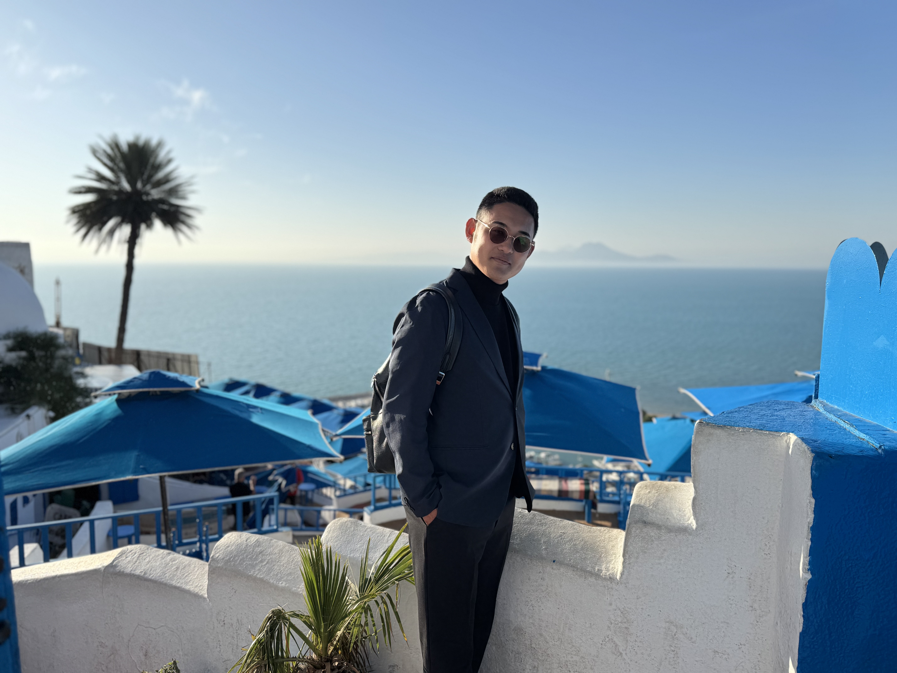
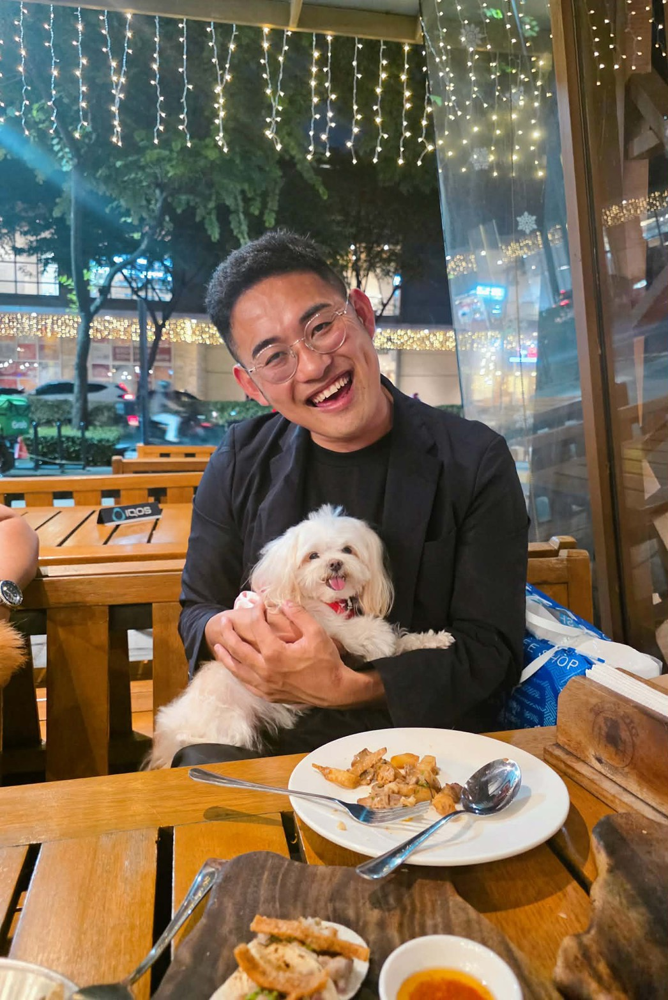

01
BRANDING
株式会社Ma 代表取締役
CEO / Representative Director, Ma Inc.
事業運営、SNS支援、企業PR、コーチング、ブランディング支援を展開。人の魅力や企業の本質を引き出し、伝わる形に変える。
肩書きでは、収まりきらない。
佐賀から世界へ、今日も何かを動かしている。
一度、死を近くに感じたからこそ、
自分らしく生きる人を増やしたい。
古賀久達。
人生をネタに、未来をつくる。
株式会社Ma 代表取締役 / NPO法人グローバルブリッジ理事長 /
Bohol Sunset Properties Inc. 代表
古賀久達は、株式会社Ma 代表取締役。佐賀を拠点に、企業支援・コーチング・NPO活動・海外事業を横断しながら、「人の可能性に火をつける」活動を展開しています。
国内では、フィットネス事業の経営のほか、企業PR、SNSコンサルティング、コーチング、動画を活用した人材・採用支援を展開。NPO法人グローバルブリッジ理事長として、国際交流・教育支援・地域活性化にも取り組んでいます。
海外では、フィリピン現地法人 Bohol Sunset Properties Inc. の代表としてボホール島での不動産事業を展開しながら、フィリピン・ドバイ・インドネシアほか10ヶ国以上の人的ネットワークを活かした海外進出・ビジネスマッチング支援にも対応しています。
国内と海外、双方で動き続けてきたからこそ、見えるものがある。
経営者であり、挑戦者であり、支援者であり、表現者。
人は、いつ死ぬかわからない。
だからこそ、自分らしく生きることを
後回しにしてはいけない。
でも、その事故が
教えてくれたことがあります。
人は、
いつ死ぬか
わからない。
だからこそ、
自分らしく生きることを後回しにしてはいけない。
誰かの可能性に火をつけたい。
迷っている人の背中を押せる人になりたい。
古賀久達の人生理念は、
この事故をきっかけに、より強く、はっきりと形になりました。
人は、完璧だから選ばれるのではありません。その人にしかない経験、言葉、表情、熱量、失敗、違和感。そういう"人間らしさ"に、人は惹かれます。
古賀久達が大切にしているのは、自分を大きく見せることではなく、自分らしさを隠さず、価値に変えること。
圧倒的なキャラ売りとは、無理にキャラクターを作ることではありません。本来持っている個性を見つけ、磨き、伝わる形にすることです。
AIの時代だからこそ、整った情報よりも、その人にしか出せない"人間味"が武器になる。
売っているのは、動画ではありません。
売っているのは、
その人の魅力が
伝わる瞬間です。
売っているのは、コーチングではありません。
売っているのは、
自分らしく動き出せる
きっかけです。
売っているのは、セミナーではありません。
売っているのは、
人が動き出す場です。
すべては、
人の可能性に火をつけるために。
金は、稼がないといけないです。
生活しなきゃならんから。大切な人を幸せにしなきゃならないから。
でも死んだら、
お金ってあの世に
持っていけないですよね。
これって最大の財産であり、一生物語ストーリーとして引継ぎますよね。
かっこいいじゃないですか。
パパとママの生きた証をずっと残せるのって！
昔の日本人は、いろんな国で過酷な環境下の中、
空港をつくったり、道をつくったり、インフラをつくったりしています。
世界中で刻まれた日本の国旗を見るたび、
心が震え上がります。
日本人ってすごいんです。
人生に、いい意味のネタを残す。
間違いなく、僕一人では無理です。
縁ある皆様と「幸せ」で「ネタ」のある人生を歩みたいと思っています。
一度きりの人生なんだから、もういいじゃないですか。
他人の目なんて気にしないぃー！
自分の限界超えて、
脳をぶっ壊しましょう。
過去と他人は変えれない。
変えれるのは、自分と未来だけ。
人の可能性に、
火をつける。
テクノロジーは進化し、AIは多くの仕事を効率化していきます。しかし、人が人を信じる理由。人が商品を買う理由。人が誰かについていきたいと思う理由。
その中心には、いつの時代も「人間力」があります。
古賀久達が大切にしているのは、知識だけではなく、行動する力。正しさだけではなく、伝える力。仕組みだけではなく、人を巻き込む力。
人の可能性に火をつける。それは、目の前の一人の人生を変え、企業を変え、地域を変え、世界へ広がっていく力だと信じています。
売り込みではなく、引き出すこと。整えるのではなく、にじみ出させること。
古賀久達のサービスは、すべて「あなたが、あなたのまま選ばれる」ためにあります。
"この人だから選ばれる"を、つくる。
経営者・個人事業主・リーダー・店舗オーナーの個性を整理し、伝わる形に変換します。見た目だけのブランディングではなく、経験、考え方、話し方、価値観、失敗談、熱量まで含めて、SNS・動画・LP・営業資料に落とし込みます。
AIには代替されない、"人を動かす力"を磨く。
経営者・リーダー・若手に対して、人間力・関係構築力・行動力・自己決定力を高める1on1コーチング。話して終わりではなく、「明日から何をするか」まで一緒に決める、行動に変わる対話を提供します。
YES, AND で広がる、人が動く対話術。
アメリカ式コミュニケーション理論をベースに、否定から入らない「YES/AND」、承認から広げる対話、人が動く伝え方を体系的に学べる研修・セミナー。
ただ撮るのではなく、魅力を引き出して発信する。
経営者・企業の魅力を引き出し、ショート動画・リール・SNSコンテンツに翻訳。採用・営業・信頼・売上につながる発信を企画から運用まで設計します。
社長の想いが、伝わっていますか？
「想いはあるのに伝わっていない会社」のために、社長と企業の本質を言語化し、動画・SNS・LP・採用資料・営業資料に落とし込みます。
アイデアを、ちゃんと事業に変える。
新規事業、地域ビジネス、海外展開、NPO活動。複数の視点から事業の方向性を整理し、マネタイズの道筋を一緒に設計。外部CSO的な壁打ちを提供します。
いきなり契約ではなく、まずは 30分の壁打ちから。
話してみて、合いそうなら、合うサービスを一緒に決めます。
SNSの必要性はわかっている。でも動けない。その理由のほとんどは、意志力より「仕組み」がないことです。
「ネタがない」ではなく「ネタの見つけ方」を知らないだけ。日常の中にコンテンツは溢れています。
機材も人手もいらない。スマホ1台で始められる撮り方・見せ方を現場に合わせてご提案します。動画編集の外注にも対応。
続かない原因は意志力ではなく仕組みの欠如。コンテンツカレンダー・投稿テンプレート・確認体制を一緒に設計します。
「なんとなくやっている」状態から脱却。数字を読み、仮説を立て、改善するサイクルを月次で一緒に回します。
「やめた」ことより「なぜやめたか」が大事。前回の課題を整理し、今度こそ継続できる体制を再設計します。
「投稿してもらう」のではなく、「あなたの会社が自走できる仕組みをつくる」——それが古賀久達の関わり方です。
"何のために発信するか"から設計する。
採用・ブランディング・集客——目的によってSNSの使い方は変わります。貴社の経営課題・ターゲット・競合環境を踏まえた発信戦略をゼロから一緒に設計します。
"数字の意味"を、経営判断に変える。
月次ミーティングでインサイト・エンゲージメント・フォロワー推移を読み解き、次の一手を一緒に考えます。「なんとなく投稿」を「目的ある発信」に進化させます。
"依存"ではなく"自走"を、最終ゴールに。
コンテンツマップ・投稿テンプレート・撮影ガイドなど、社内に蓄積される資産を共に構築。担当者が変わっても崩れない発信体制をゴールに据えます。
Reels・TikTok・YouTube Shortsに対応した縦型ショート動画の編集を外注対応します。撮影から仕上げまでワンストップでご依頼いただけます。
SNSは「今すぐ結果が出る広告」ではありません。毎日の発信が会社のアーカイブとなり、訪れた人が過去から現在まで追体験できるメディアになります。
3年間の投稿が、あなたの会社の"信用の履歴書"になる。
戦略設計・コンテンツ企画・投稿ルーティン構築。「何者か」を伝える第一歩を、一緒に踏み出す。
投稿が増えるほど"会社の文脈"が生まれる。求職者・取引先・顧客が「この会社はちゃんとしている」と感じ始める転換点。
3年分の投稿は、誰にも奪えない会社の物語の資産。採用力・信用力・ブランド力が複利で高まる状態が完成する。
フィリピンを中心に、アジア・中東・アフリカ・中南米など複数国に人的ネットワークを持ちます。「海外進出を保証する」のではなく、海外展開の最初の一歩を、一緒に整理するところから動き出します。
特にフィリピンでは、現地ビジネスの実務経験と人的ネットワークを活かした相談が可能です。その他の国については、相談内容に応じて現地の人脈や関係者との接点づくり、情報収集、視察企画を行うことができます。
海外展開は、いきなり大きく始める必要はありません。
まずは可能性を整理するところから、ご相談ください。
進出・視察・ビジネスマッチング・現地パートナー探しなど、内容に応じて柔軟にアレンジします。
そんな、まだ形になっていない相談から、一緒に整理します。
最初から完璧な相談でなくていい。
ジム経営、SNS運用、NPO活動、海外法人、不動産開発。机上の理論ではなく、自ら事業を動かしてきた実践知があります。
企業や人の中に眠っている強み、想い、ストーリーを見つけ、伝わる言葉に変えることを得意としています。
佐賀という地域に根ざしながら、フィリピンをはじめとする海外との接点を持ち、ローカルとグローバルをつなぎます。
話して終わりではなく、次に何をするかまで整理。人が動き出すための言葉と仕組みを設計します。
ショート動画、SNS広告、企業PR、採用動画など、現代に合った発信の形に落とし込めます。
夢を語るだけではなく、売上・導線・人材・運用まで考える。情熱と経営の両方を大切にしています。
そういう人の中にある火種を見つけることが、
古賀久達の仕事です。
一つでも当てはまれば、
30分の壁打ちから始めましょう。

佐賀県佐賀市を拠点に、パーソナルジム運営、SNSコンサルティング、企業PR、コーチング、経営者ブランディング支援を行う。
また、フィリピン・ボホール島にて不動産開発・賃貸事業を展開し、海外での事業づくりにも挑戦。
NPO活動では、国際交流、教育支援、地域活性化、ボランティア活動をテーマに、日本と海外をつなぐ活動を推進している。
Based in Saga, Japan, Hisamichi Koga is an entrepreneur, coach, and community leader working across fitness, branding, SNS consulting, nonprofit activities, and international business.
He operates fitness and wellness businesses, supports companies and leaders through branding and communication strategies, and leads Global Bridge NPO to promote international exchange, education, volunteer work, and community development.
He also serves as President of Bohol Sunset Properties Inc. in the Philippines, focusing on real estate development and property leasing in Bohol.
To ignite human potential.
He believes in living authentically through powerful personal branding and helping others turn their individuality, experience, and human story into value.
まずは30分の壁打ちから。
整っていない相談でも、まとまっていない想いでも大丈夫です。